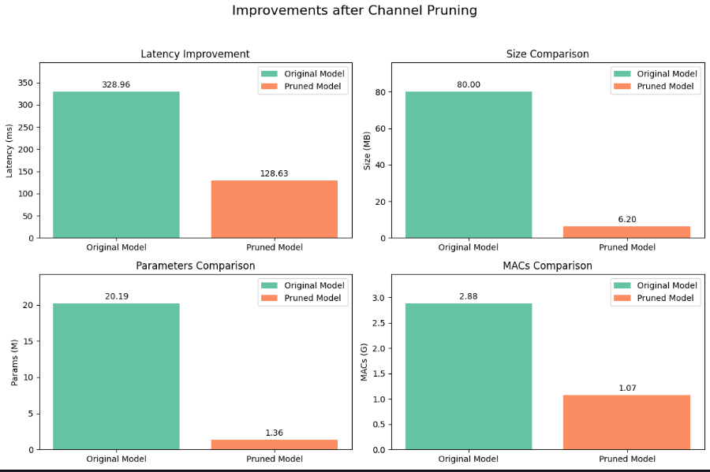

FPGA-Optimized Neural Architecture Search for Enhanced Hardware Efficiency (FONAS)
Summary:Searched
for the set of efficient deep neural architecture(FPGANets) for image classification with two costraints
arithmetic intensity and latency for FPGA that outperformed many existing networks in
terms of both latency and accuracy on ImageNet-1k
Project Work and Methodologies
- Compressing EfficientNet-V2 to implement it on FPGA.
- Leverage NAS techniques to automate the creation of task-specific neural networks targeting latency
for
FPGAs.
- Hardware Optimization: Focusing on co-designing models and hardware to enhance efficiency and
performance.
Hardware NAS Focus
- Optimization Goals: Minimizing latency, maximizing accuracy, and efficient resource utilization on
FPGA
platforms.
- Architecture Sampling: Generating diverse architectures meeting hardware constraints like latency
and
resource usage.
- Evaluation Metrics: Assessing performance based on accuracy, inference speed, and resource
utilization
for optimal architecture selection.
Key Results and Findings
- Compressed EfficientNet-V2: Implemented channel pruning to reduce EfficientNetV2’s channel count by
88%
resulting in a model that was 14 times smaller, 2.5 times faster in inference speed, and had 14
times
fewer parameters and 2.5 times fewer MAC operations.
- Latency dataset for Ultra96v2 FPGA board was constructed.
- Latency-aware networks and Networks with varying arithmetic intensity were discovered through an
evolutionary search process.
- Searched architectures (FPGAnets) have better performance than most of the existing architectures in
terms of the trade-off of latency and accuracy.

Future Directions
- Integration Challenges: Implementing optimized architectures on FPGA platforms seamlessly.
- Validation Process: Verifying the effectiveness of optimized architectures on Ultra96-v2 FPGA
boards.
- Framework Refinement: Further enhancing the HW-NAS pipeline for improved efficiency and real-time
performance.
This project aims to contribute significantly to the field of image classification by showcasing the
benefits of HW-NAS and FPGA-based acceleration in achieving superior efficiency and real-time
performance metrics.